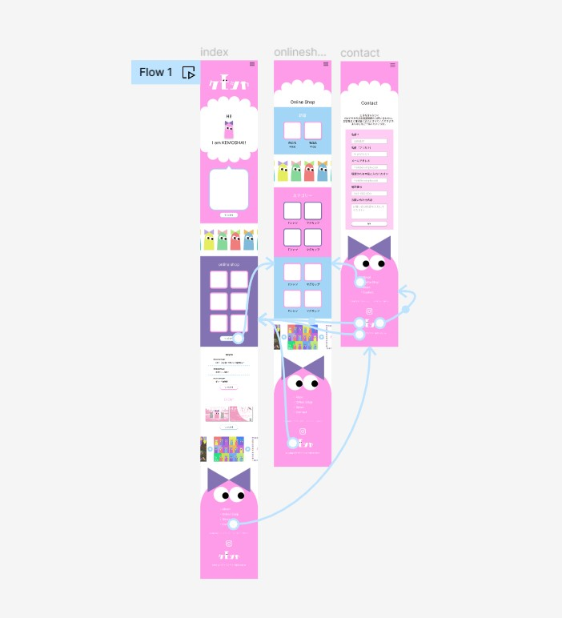
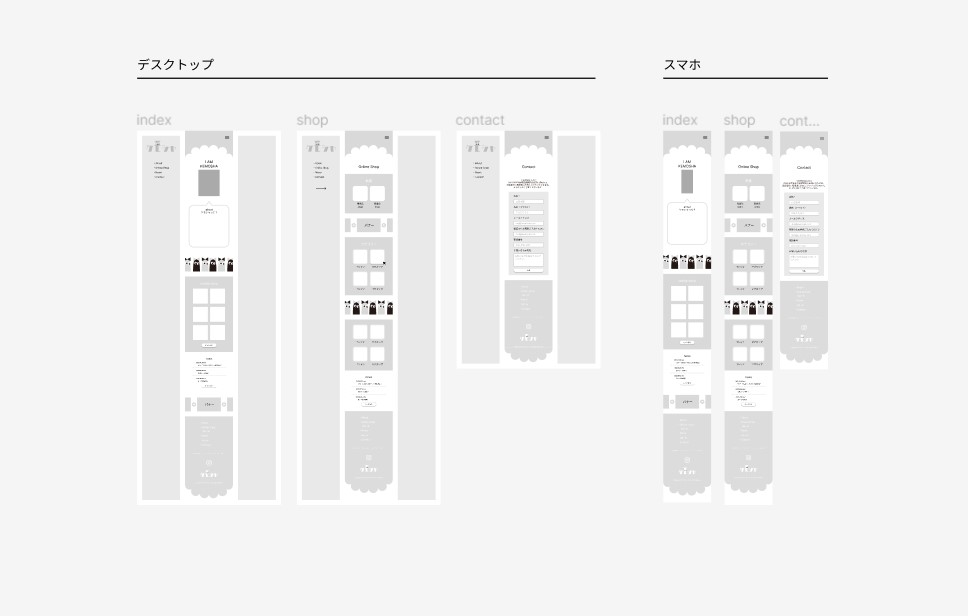

ケモシャという架空のキャラクターを紹介する公式サイトです。
URL
デザインについて
10代学生向けの、色を多く使ったデザインにしました。今流行りのゆるっと優しめの色使いとは一変して、
はっきりわかりやすく、でもどこか愛らしくかわいいを意識しました。
また、10代の女子をターゲットにしているので、女子が好む色ナンバーワンの「ピンク」をメインキャラのオリジナルカラーに設定し、
且つ令和という時代、原宿・渋谷の活気をに合った、明るめのピンクをケモシャのメインカラーにチョイスしました。
そして今回、計3ページのみの制作ですが、コンセプトとブランディングを重視し、ケモシャのイメージをどう閲覧者に印象付けるかに重きをおきました。 WEBサイトページでの作成は未完ですが、ケモシャのWEBサイトでは「閲覧者本人の好きな色でケモシャを作り、 オリジナルのケモシャを日常に紛れこませる」というコンセプトもあるので、いつか実現したいです。
サイトの目的(コンバージョン)
認知度向上
顧客の獲得(買ってもらう目的)
ブランディング(価値を高める目的)
ターゲット
POPなかわいさを求めている日本の小中高生女子
仕様ツール
VScode(HTML,CSS,javaScript,jQuery)・Figma・Illustrator・Photoshop・Capcut
担当
企画、デザイン、画像加工 ライティング、キャラクターデザイングラフィック、ロゴデザイン、コーディング(レスポンシブ)
制作時間
Total : 42h
Figma : 13h
Illustrator/Photoshop : 8h
Capcut : 1h
Coding : 20h
コーディングについて
職業訓練校3ヶ月で制作したWEBサイトになります。使用言語はHTML、CSS、Java Scriptを用いたjQueryの導入や、Animation CSSで動きをつけ、ケモシャの雰囲気に合うようにしました。

